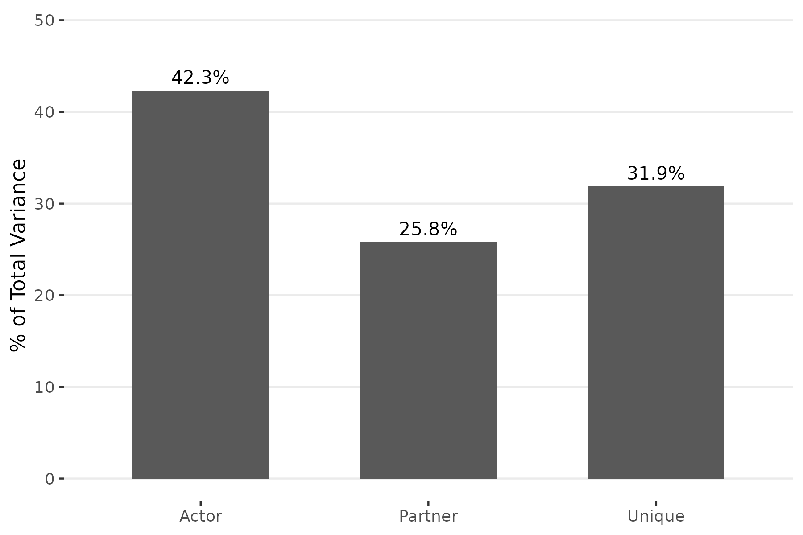
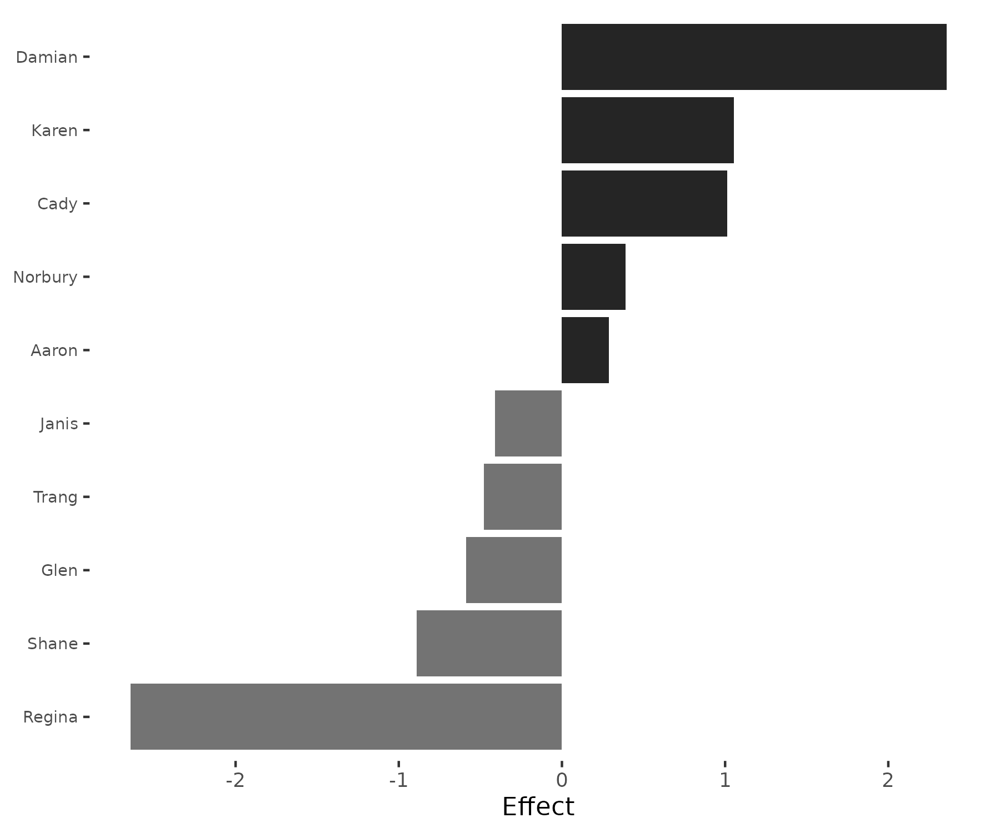
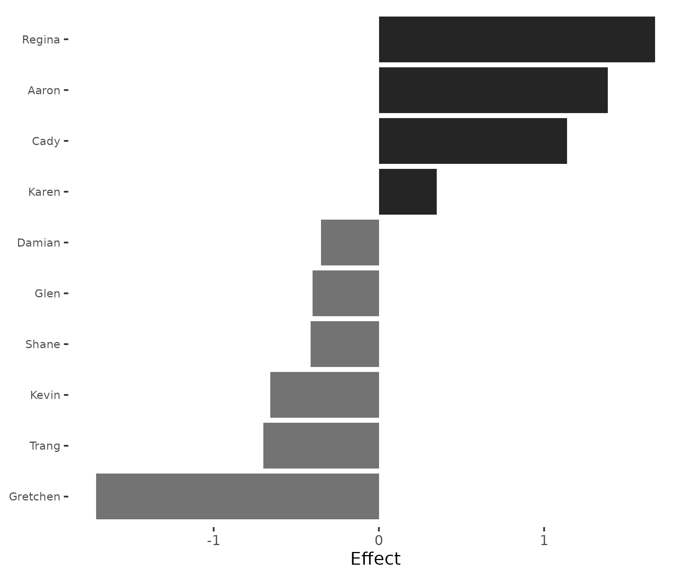
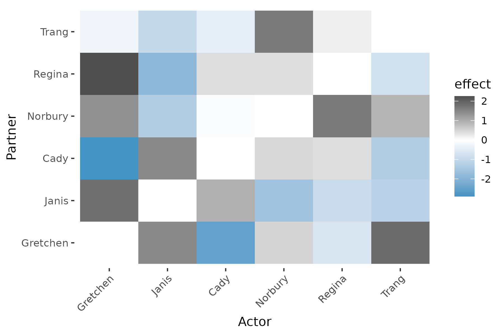
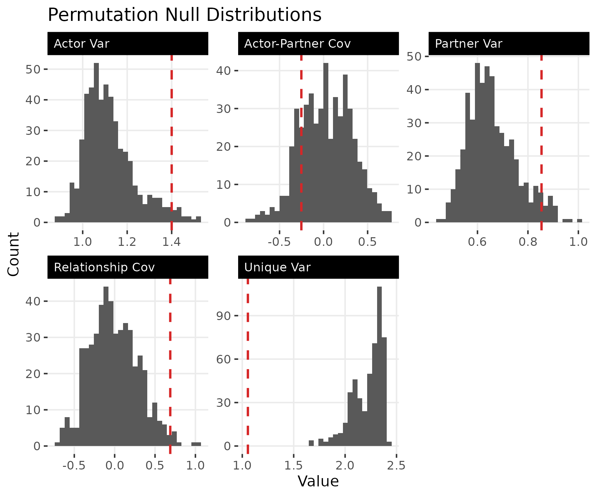
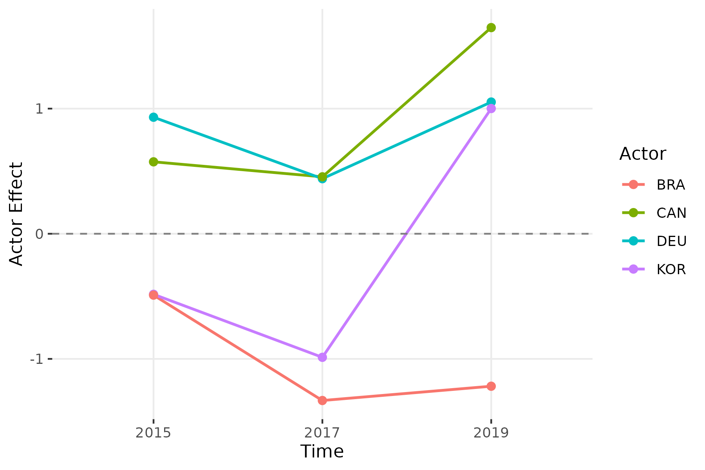
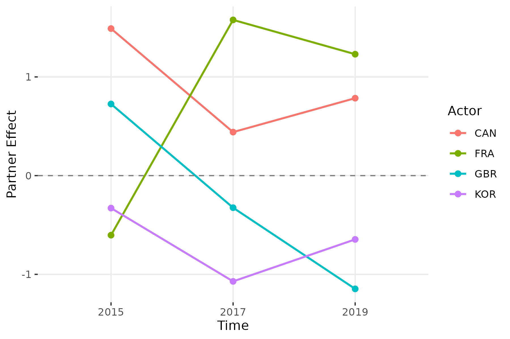
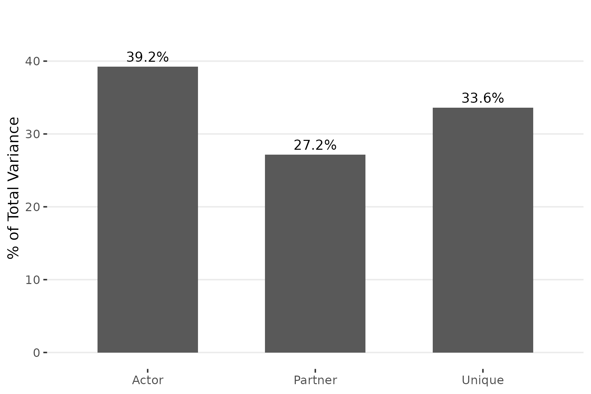
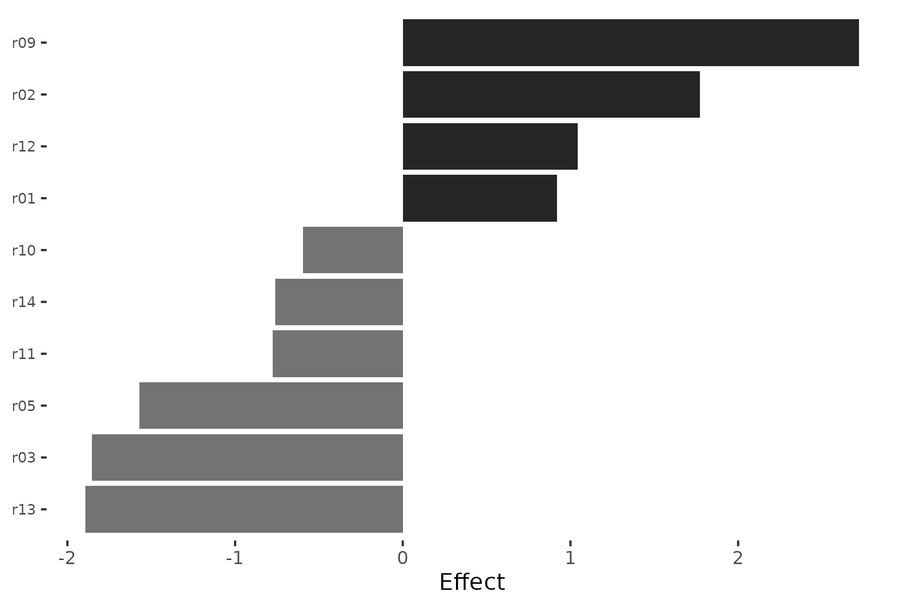

The netify-srm Pipeline
Cassy Dorff, Shahryar Minhas, and Tosin Salau
2026-03-29
Source:vignettes/pipeline.Rmd
pipeline.RmdOverview
The srm package is part of the netify
ecosystem of R packages for network analysis:
- netify: Network construction and general analysis
- lame: Latent and Multiplicative Effects models
- sir: Social Influence Regression models
- dbn: Dynamic Bilinear Network models
The SRM decomposition is a natural first step before fitting more complex models. It answers: How much of the variation in this network is due to sender behavior, receiver behavior, and relationship-specific factors?
This vignette walks through a complete analysis pipeline: converting
raw data to networks with netify, decomposing directed
networks with srm, testing significance via permutation,
tracking change over time, and validating with simulation.
Step 1: From dyadic data to networks
We begin with the ATOP East Asia consultation agreements included in the package.
library(srm)
library(netify)
data("atop_EA")
head(atop_EA)
year country1 country2
1 2010 USA KOR
2 2011 USA KOR
3 2012 USA KOR
4 2013 USA KOR
5 2014 USA KOR
6 2015 USA KORThe data is a dyad-year data frame: each row records a consultation
agreement between two countries in a given year. We use
netify to convert this into an adjacency matrix and pass it
directly to srm():
net_cross = netify::netify(
input = atop_EA, actor1 = "country1", actor2 = "country2",
symmetric = TRUE, sum_dyads = TRUE, diag_to_NA = TRUE,
missing_to_zero = TRUE
)
fit_atop = srm(net_cross)
fit_atop
Social Relations Model
----------------------------------------
Mode: unipartite
Actors: 18
Grand mean: 1.0196
Variance Decomposition:
Actor 0.6475 ( 9.0%)
Partner 0.6475 ( 9.0%)
Unique 5.8607 ( 81.9%)
Relationship 5.8607 (cov)
Actor-Partner 0.6475 (cov)Because this network is symmetric (undirected), actor and partner effects are identical, which constrains the variance decomposition: actor and partner variance are equal, and relationship covariance equals unique variance. To separate sender behavior from receiver behavior, we need directed data.
Step 2: Cross-sectional SRM with directed data
The classroom dataset is a 12 x 12 matrix of friendship
ratings among students at North Shore High (inspired by Mean
Girls), where student
’s
rating of student
need not equal
’s
rating of
.
data("classroom")
fit = srm(classroom)
fit
Social Relations Model
----------------------------------------
Mode: unipartite
Actors: 12
Grand mean: 3.5077
Variance Decomposition:
Actor 1.4000 ( 42.3%)
Partner 0.8539 ( 25.8%)
Unique 1.0546 ( 31.9%)
Relationship 0.6885 (cov)
Actor-Partner -0.2525 (cov)With directed data, the three variance components are now distinct: actor variance (42.3%) captures differences in how generously students rate others on average, partner variance (25.8%) captures differences in how highly students are rated by others, and unique variance (31.9%) captures relationship-specific deviations. Actor effects are the largest component — individual sending tendencies (generosity vs. selectivity) are the dominant source of variation in this network.
The covariances are also informative. The positive relationship covariance (0.69) indicates reciprocity: if student rates above average, tends to rate above average as well. The negative actor-partner covariance (-0.25) captures a classic Queen Bee dynamic: generous raters (like Damian) are not the most popular, while the most popular student (Regina) is the stingiest rater.
Variance partition
plot(fit, type = "variance")
The variance partition shows that sender tendencies are the largest source of variation, followed by relationship-specific effects and then receiver popularity. All three components contribute meaningfully.
Who rates most generously? Who is rated most highly?
plot(fit, type = "actor")
Damian has the largest positive actor effect (+2.36), meaning he rates peers well above the class average. He’s the warmest rater at North Shore High. Regina (-2.64) and Shane (-0.89) have the most negative actor effects — Regina rates strategically low, consistent with her role as the selective Queen Bee.
plot(fit, type = "partner")
The partner effects tell the opposite side: Regina is the most popular (highest partner effect, +1.67), while Gretchen is rated lowest by peers (-1.71) — “and none for Gretchen Wieners.” Notice that Regina has the most negative actor effect but the strongest positive partner effect — she is the stingiest rater but the most admired student. A classic Queen Bee dynamic. Aaron (+1.39) and Cady (+1.14) are also popular, while Kevin (-0.66) and Trang (-0.70) sit at the bottom.
Dyadic effects
plot(fit, type = "dyadic", n = 6)
The heatmap of unique effects shows relationship-specific deviations after removing actor and partner tendencies. Dark cells indicate pairs whose mutual ratings exceed what their individual tendencies would predict (positive unique effects); blue cells indicate pairs who rate each other lower than expected (negative unique effects); white cells are close to predicted.
Test significance
Permutation testing assesses whether the observed variance components are larger than expected under random relabeling of actors:
pt = permute_srm(fit, n_perms = 500, seed = 6886)
print(pt)
SRM Permutation Test
Permutations: 500
--------------------------------------------------
Component Observed Mean(Null) p
--------------------------------------------------
Actor Var 1.4000 1.1212 0.034 *
Partner Var 0.8539 0.6576 0.046 *
Unique Var 1.0546 2.2189 1.000
Relationship Cov 0.6885 -0.0048 0.018 *
Actor-Partner Cov -0.2525 0.0315 0.806
---
Signif. codes: 0 '***' 0.001 '**' 0.01 '*' 0.05 '.' 0.1Both actor and partner variance are significant (), confirming that the heterogeneity in sending and receiving behavior is not an artifact of chance. The relationship covariance is also significant (), providing evidence of genuine reciprocity — friends rate each other well. The actor-partner covariance is not significant (), so the Queen Bee pattern (negative correlation between giving and receiving) should be interpreted cautiously.
The unique variance has because permutation preserves marginal totals: after shuffling, dyadic noise increases, so the observed unique variance is always smaller than the null. This is expected and does not mean dyadic effects are absent.
plot(pt)
The null distributions show where the observed statistics (vertical lines) fall relative to the permuted values. Actor, partner, and relationship covariance sit in the right tail of their null distributions, while unique variance sits in the left tail.
Step 3: Longitudinal analysis
The trade_net dataset contains simulated bilateral trade
intensity matrices for 10 countries at three time points (2015, 2017,
2019). Because trade flows are directed — exports from
to
differ from exports from
to
— the decomposition produces distinct actor and partner components at
each period.
data("trade_net")
fit_long = srm(trade_net)
fit_long
Social Relations Model
----------------------------------------
Mode: unipartite
Time points: 3
Actors: 10
Grand mean: 2.0433 (avg)
Variance Decomposition:
Actor 0.5879 ( 33.0%)
Partner 0.5259 ( 29.5%)
Unique 0.6663 ( 37.4%)
Relationship 0.3575 (cov)
Actor-Partner 0.2259 (cov)Averaged across periods, actor variance (33.0%) and partner variance (29.5%) are comparable, with unique effects at 37.4%. The positive relationship covariance (0.36) reflects trade reciprocity, and the positive actor-partner covariance (0.23) means that countries which export heavily also tend to import heavily.
Stability of positions over time
Do countries maintain their relative positions as exporters and importers across periods?
srm_stability(fit_long, type = "actor")
time1 time2 correlation n
1 2015 2017 0.08276307 10
2 2017 2019 0.20194660 10Actor effect correlations are low: 0.08 between 2015 and 2017, and 0.20 between 2017 and 2019. Countries’ relative export positions shift substantially between periods.
srm_stability(fit_long, type = "partner")
time1 time2 correlation n
1 2015 2017 -0.01160051 10
2 2017 2019 0.55719339 10Partner effects are similarly unstable (correlation of -0.01 between 2015–2017, rising to 0.56 between 2017–2019). The import side shows more continuity in the later period, but both sender and receiver roles are reshuffled across time.
Tracking specific countries
Use srm_trends() to extract actor or partner effects as
a tidy data frame across time points:
srm_trends(fit_long, type = "actor", actors = c("CAN", "DEU", "BRA", "KOR"))
actor time effect
3 DEU 2015 0.931250
7 KOR 2015 -0.483875
9 BRA 2015 -0.490500
10 CAN 2015 0.574875
13 DEU 2017 0.440125
17 KOR 2017 -0.987500
19 BRA 2017 -1.332625
20 CAN 2017 0.455000
23 DEU 2019 1.052625
27 KOR 2019 1.000875
29 BRA 2019 -1.218500
30 CAN 2019 1.647625Canada’s actor effect jumps from 0.57 in 2015 to 1.65 in 2019, ending as the strongest relative exporter. South Korea reverses from -0.99 in 2017 to 1.00 in 2019. Brazil is consistently negative across all three periods. Germany remains a positive exporter throughout (0.93, 0.44, 1.05).
srm_trend_plot(fit_long, type = "actor", n = 4)
srm_trends(fit_long, type = "partner", actors = c("CAN", "FRA", "KOR", "CHN"))
actor time effect
2 CHN 2015 -1.386625
6 FRA 2015 -0.603250
7 KOR 2015 -0.328875
10 CAN 2015 1.489875
12 CHN 2017 0.137375
16 FRA 2017 1.577750
17 KOR 2017 -1.071500
20 CAN 2017 0.441000
22 CHN 2019 -0.019250
26 FRA 2019 1.230250
27 KOR 2019 -0.646125
30 CAN 2019 0.784625On the import side, France shows the most dramatic shift, moving from -0.60 in 2015 to +1.58 in 2017, indicating a sharp increase in relative import intensity. South Korea’s partner effect is consistently negative (-0.33 to -1.07), meaning it receives less trade than its peers. Canada maintains a positive partner effect across all periods.
srm_trend_plot(fit_long, type = "partner", n = 4)
Step 4: Simulation for validation
To build confidence in the decomposition, we verify that it can recover known parameters from simulated data. We generate a directed network with specified variance components:
sim = sim_srm(
n_actors = 25,
actor_var = 2.0,
partner_var = 1.0,
unique_var = 3.0,
actor_partner_cov = 0.5,
relationship_cov = 0.3,
grand_mean = 1.0,
seed = 6886
)
fit_sim = srm(sim$Y)
summary(fit_sim)
Social Relations Model - Variance Decomposition
==================================================
Component Variance % Total
------------------------------------------
Actor 1.8088 29.6%
Partner 1.1009 18.0%
Unique 3.2102 52.5%
Relationship (cov) 0.3815 --
Actor-Partner (cov) 0.6384 --Compare the true parameters against the SRM estimates:
data.frame(
Component = c("Actor var", "Partner var", "Unique var",
"Relationship cov", "Actor-partner cov"),
True = c(2.0, 1.0, 3.0, 0.3, 0.5),
Estimated = round(fit_sim$stats$variance, 2)
)
Component True Estimated
1 Actor var 2.0 1.81
2 Partner var 1.0 1.10
3 Unique var 3.0 3.21
4 Relationship cov 0.3 0.38
5 Actor-partner cov 0.5 0.64The variance components recover the true values reasonably well: actor variance (1.81 vs. 2.0), partner variance (1.10 vs. 1.0), and unique variance (3.21 vs. 3.0) are all in the right neighborhood of their targets. The covariance estimates (relationship: 0.38 vs. 0.3; actor-partner: 0.64 vs. 0.5) show more sampling variability — covariances are harder to estimate precisely from a single network, especially with only 25 actors. The relative ordering is preserved — unique variance is largest, actor variance is roughly double partner variance — confirming that the decomposition correctly identifies the structure of the data generating process.
Step 5: Bipartite (two-mode) networks
When senders and receivers belong to different populations, the network is bipartite and the decomposition simplifies. There is no reciprocity structure or actor-partner covariance; only actor variance, partner variance, and unique variance are estimated. We demonstrate with a simulated two-mode network of 15 senders and 20 receivers:
sim_bip = sim_srm(
n_actors = c(15, 20),
bipartite = TRUE,
actor_var = 2.0,
partner_var = 1.0,
unique_var = 1.5,
grand_mean = 3.0,
seed = 6886
)
fit_bip = srm(sim_bip$Y)
fit_bip
Social Relations Model
----------------------------------------
Mode: bipartite
Actors: 15
Grand mean: 1.8408
Variance Decomposition:
Actor 1.6468 ( 39.2%)
Partner 1.1406 ( 27.2%)
Unique 1.4111 ( 33.6%)The bipartite SRM reports only three variance components (no covariances). Actor variance captures differences among the 15 senders; partner variance captures differences among the 20 receivers. The variance partition reveals which side of the network drives more heterogeneity.
plot(fit_bip, type = "variance")
Actor and partner effects can be visualized the same way as for unipartite networks:
plot(fit_bip, type = "actor")
The bar chart shows the 15 senders sorted by absolute effect size.
Senders with positive effects (dark bars) send higher values than the
network average; senders with negative effects (gray bars) send lower
than average. Because the network is simulated from known parameters,
the spread of effects reflects the actor_var = 2.0 we
specified.
Bipartite networks also support longitudinal analysis. Pass a list of
rectangular matrices to srm(), and all the longitudinal
tools (srm_trends, srm_stability,
srm_trend_plot) work as expected.
Summary
The srm package provides a descriptive decomposition
complementary to the model-based approaches in lame,
sir, and dbn. A typical analysis pipeline:
-
Construct the network from raw data using
netify, or supply a matrix directly -
Decompose with
srm()to partition variation into actor, partner, and dyadic components -
Visualize actor effects, partner effects, dyadic
heatmaps, and variance partitions with
plot() -
Test significance via
permute_srm()to assess whether components exceed chance levels -
Track longitudinal change with
srm_stability()andsrm_trend_plot() -
Validate with
sim_srm()to confirm that the decomposition recovers known parameters
References
Dorff, Cassy, and Michael D. Ward. (2013). Networks, Dyads, and the Social Relations Model. Political Science Research Methods 1(2):159-178.
Dorff, Cassy, and Shahryar Minhas. (2017). When Do States Say Uncle? Network Dependence and Sanction Compliance. International Interactions 43(4):563-588.